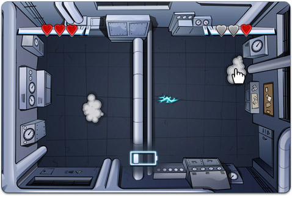

15 |
Progreso del juego |
 |
|
Comprobar tu progreso
Para comprobar tus Puntos de reputación (Reputation Points), tu Rango (Rank), y cuántas Monedas para sugerencias (Hint Coins) tienes, abre Agente/Diario (Agent Journal) en el menú Teléfono ACME (ACME Phone).
El caso se complica, de modo que es buena idea que tengas algo escrito de lo que has averiguado durante la investigación. Puedes revisar todo lo que has hecho hasta el momento en la pestaña Diario (Journal).
Mira la pestaña Mensajes (Messages) para volver a oír tus mensajes.
Cercando al villano
Si quieres atrapar al villano, tendrás que saberlo todo sobre él o ella. La pestaña Información (Information) que está en Orden de aprehensión (Warrant) en el menú Teléfono ACME (ACME Phone) tiene información acerca de los secuaces de V.I.L.E. de Carmen Sandiego. Coloca el cursor sobre un villano y oprime
La pestaña Pistas (Clues) tiene las pistas que has encontrado acerca del villano. Antes de obtener una orden de aprehensión, tienes que usar las pistas para averiguar quién es el villano. El villano ha dejado tres pistas en todo el mundo que te ayudarán a averiguar quién es.
Cuando encuentres las tres pistas, selecciona al villano correcto de la lista de imágenes. Luego coloca el cursor sobre la pestaña Aplicar (Apply) y oprime
Atrapando al villano
¡Por fin has conseguido encontrar al villano!

Pero, ¡el villano no se dejará atrapar solo porque hayas obtenido una orden de aprehensión!
Para escapar a los relámpagos del villano, mueve el cursor por a la pantalla.
Usa tu Escudo ACME (ACME shield) para hacer que los relámpagos reboten hacia las nubes. ¡Pero asegúrate de que la batería del escudo esté recargada!
Para usar tu Escudo ACME (ACME shield), oprime |
 |
 |
 |